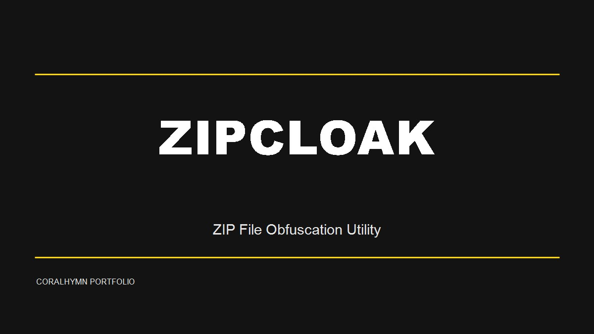

项目概述
ZipCloak 是一个 ZIP 文件混淆工具，对指定类型的文件进行特殊处理，使某个文件被系统认为是文件夹，用于保护压缩包内容不被直接查看。
核心功能
- 混淆模式：选择源文件夹与输出 ZIP，设置需要混淆的文件扩展名
- 恢复模式：选择混淆后的 ZIP 并恢复到指定目录
- 配置文件持久化：自动生成 zipcloak_config.json
- 中文 / 英文多语言切换，语言包可扩展
- 可选压缩与运行日志

ZipCloak 是一个 ZIP 文件混淆工具，对指定类型的文件进行特殊处理，使某个文件被系统认为是文件夹，用于保护压缩包内容不被直接查看。